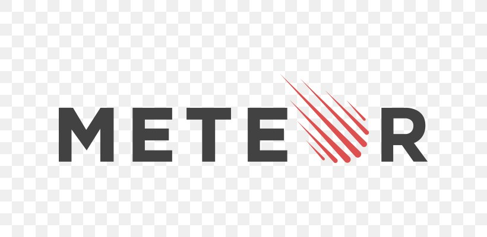

FrameWorks
Por: Jean Philip
Introdução
Em uma busca rápida na web, é possível encontrar diversas definições para Framework, algumas simples, outras mais elaboradas, mas o ponto comum entre todas é a reusabilidade. Assim um Framework tem como principal objetivo resolver problemas recorrentes com uma abordagem genérica, permitindo ao desenvolvedor focar seus esforços na resolução do problema em si, e não ficar reescrevendo software. Você pode se perguntar, então Framework é uma biblioteca? Bem quase isso, pode-se dizer que é um conjunto de bibliotecas ou componentes que são usados para criar uma base onde sua aplicação será construída.
Os principais tipos de frameworks
Laravel
Atualmente, esse é um dos frameworks PHP mais usados no mercado, principalmente por ser muito robusto e versátil. Com foco em velocidade e elegância, o Laravel se adapta a grandes times e também a trabalhos solo a partir da sincronia de banco de dados agnóstica. Caso surjam dúvidas, você pode acompanhar os Laracasts, que são as centenas de tutoriais em vídeos criados pela própria empresa.
Ruby on rails
Um velho conhecido de muitos desenvolvedores, o Ruby on rails é um framework formulado a partir da linguagem Ruby, que oferece ótimas condições de programação e testes em bancos de dados para aplicações web. Traz funções de segurança embutidas e um kit de complementos que podem ser incorporados ao seu produto final para estender suas funcionalidades.
MeteorJS
Também chamado apenas de Meteor, esse framework traz excelentes condições para desenvolvimento em paralelo de aplicações mobile e web. Sua prototipação é veloz e desenvolvida para ser multiplataforma (arquitetura web, Android e iOS). Por trazer um código altamente eficiente, contribui para uma menor incidência de bugs, sendo também considerado um recurso fundamental para e-commerces.

React
Diferentemente das outras opções da lista, o React é uma biblioteca, e não um framework. Ele é utilizado para a construção de interfaces de usuário com foco em elementos reutilizáveis para apresentar dados que se atualizam ao longo do tempo. Entender por que o React não é um framework ajuda a definir esse conceito. Essencialmente, um framework resolve problemas estruturais e de arquitetura a nível de código, algo que o React faz.
Conclusão
Os frameworks são uma ferramenta que possibilita a economia de bastante tempo de desenvolvimento. Embora eles tragam várias vantagens para o dia a dia do desenvolvedor, vale lembrar que é necessário tomar alguns cuidados ao utilizar frameworks. Pois se estiverem de forma incorreta pode acabar trazendo mais problemas que soluções.
Clique aqui para saber mais sobre o assunto